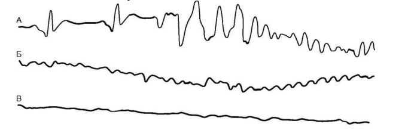
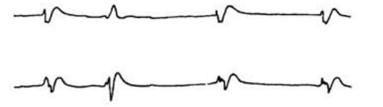

Расширенные реанимационные мероприятия
Вторым этапом оказания помощи при клинической смерти после базовых реанимационных мероприятий является расширенная сердечно-легочная и церебральная реанимация. Основным отличием этого этапа от базовой СЛР является использование при оказании помощи высокотехнологичных приборов, различных устройств и медикаментов, что требует специальной подготовки людей, осуществляющих реанимацию. Так, расширенная СЛР включает проведение дефибрилляции по показаниям, инструментальные, инвазивные методы обеспечения и поддержания проходимости дыхательных путей, ИВЛ ручным и автоматическим методами, установление венозного или внутрикостного доступа с введением лекарственных препаратов, проведение по показаниям ЭКС, а также выявление и лечение возможных обратимых причин остановки кровообращения.
Для правильного выбора алгоритма оказания помощи расширенная реанимация должна начинаться с установления электрофизиологических механизмов прекращения кровообращения. Причем в первые минуты клинической смерти определять ритм сердца необходимо принтером дефибриллятора-монитора с минимальной затратой времени.
Нарушения ритма, приводящие к остановке кровообращения, подразделяется на две группы: нарушения ритма, требующие проведения дефибрилляции (фибрилляция желудочков/желудочковая тахикардия без пульса (ФЖ/ЖТ)) и ритмы, не требующие этого (асистолия и электромеханическая диссоциация - ЭМД).
Фибрилляция желудочков
Самый частый (80-90%) тип остановки сердечной деятельности. Фибрилляция желудочков - разрозненные, беспорядочные и разновременные сокращения отдельных мышечных пучков, приводящие к потере способности сердца совершать координированные сокращения. Совершенно очевидно, что в этом случае теряется главный результат сократимости сердца—обеспечение адекватного выброса. Представляет интерес, что в ряде случаев в связи с реакцией сердца на первоначальное гипоксическое раздражение интенсивность фибрилляции желудочков бывает настолько высокой, что общая сумма затрачиваемой сердцем энергии может превышать энергию нормально сокращающегося сердца, хотя эффект производительности здесь будет нулевым. При фибрилляции только предсердии кровообращение может оставаться на достаточно высоком уровне, поскольку оно обеспечивается сокращениями желудочков. При фибрилляции желудочков кровообращение становится невозможным и быстро наступает смерть. Фибрилляция желудочков—чрезвычайно устойчивое состояние. Спонтанное прекращение фибрилляции желудочков наблюдается крайне редко. Диагностировать наличие фибрилляции желудочков можно лишь по ЭКГ, на которой появляются нерегулярные колебания неравномерной амплитуды с частотой около 400—600 в минуту. С истощением метаболических ресурсов сердца амплитуда фибриллярных колебаний уменьшается, фибрилляция становится слабовыраженной и через различные промежутки времени переходит в полное прекращение сердечной деятельности.
Для объяснения механизмов нарушений сердечного ритма при фибрилляции желудочков существуют две теории: гетеротопного автоматизма и «кольцевого» ритма.
Гетеротопный автоматизм. Согласно этой теории, фибрилляция сердца возникает в результате его «перевозбуждения», когда в миокарде появляются многочисленные очаги автоматизма. Однако в последнее время накопилось достаточно данных, свидетельствующих о том, что расстройство координированности сердечных сокращений, наблюдающееся при фибрилляции сердца, вызывается нарушением проведения возбуждения по миокарду.
«Кольцевой» ритм. В нормальных условиях электрический импульс, идущий по проводящей системе, в конечной ее части раздваивается и затем равномерно распространяется в обе стороны по мышечному волокну. В ряде случаев в одной из ножек проводящей системы может возникнуть зона функциональной блокады, вызванная, например, ишемией миокарда. Импульс 2 все-таки проходит эту зону, но достигает мышцы с запозданием, когда импульс 1 уже привел к возбуждению большей ее части. Однако этот же импульс 2 может не пройти зону функциональной блокады и как бы отражается от нее. Импульс 1, достигнув мышечного волокна, распространяется по нему в обоих направлениях. Достигнув области, по которой должен был идти импульс 2, и найдя эту область в состоянии, готовом к возбуждению, он может распространиться по ней ретроградно (функциональная блокада нередко бывает однонаправленной), а затем пойти по области импульса 1, если она уже вышла из рефракторного периода. Возникает круговая циркуляция возбуждения. На ЭКГ в таких случаях после нормального желудочкового комплекса регистрируется возвратная экстрасистола. Такое возбуждение может распространиться по кругу один раз и прекратиться, но при определенных временных параметрах, которые зависят от местоположения и распространенности зоны функциональной блокады, возбуждение может начать циркулировать по миокарду многократно, приводя либо к пароксизму желудочковой тахикардии, либо к фибрилляции желудочков. Патологическая циркуляция возбуждения, с которой связаны различные эктопические ритмы, в английском языке получила название феномена «re-entry» («повторный вход»). Она может возникнуть и между клетками с разным периодом восстановления. Клетки с более коротким периодом восстановления могут повторно возбуждаться клетками с более продолжительным потенциалом действия, что при соответствующих условиях может вызвать фибрилляцию как предсердий, так и желудочков. В основе мерцания (фибрилляции) лежит, таким образом, неравенство рефрактерных периодов. Такое неравенство существует в предсердиях и желудочках даже в норме, но под воздействием различных факторов (ишемия) возрастает степень неравенства или несоответствия рефрактерных периодов. Тотчас же после возбуждения сердечная мышца находится в состоянии равномерной рефрактерности к физиологическим раздражителям, а немного позже вся мышца уже оказывается полностью восстановленной и только между этими периодами ткань находится одновременно в различных стадиях восстановительного процесса. Этому периоду было дано название «ранимого». Он определяется как отрезок времени длительностью приблизительно 30 мс, непосредственно перед вершиной зубца Т на ЭКГ, записанной с поверхности тела. Надпороговые импульсы, в том числе и разряд дефибриллятора, подаваемые в этот период, могут вызвать фибрилляцию желудочков.
Непосредственными причинами фибрилляции сердца являются:
1) гипоксия; 2) интоксикация;
3) механическое раздражение сердца;
4) электрическое раздражение сердца;
5) низкая температура тела (гипотермия ниже 28° С).
При одновременном сочетании нескольких из этих факторов опасность фибрилляции возрастает
Клиническая картина ФЖ:
• через 15-20 с от начала ФЖ больной внезапно теряет сознание;
• через 40-50 с развивается однократное тоническое сокращение
скелетных мышц;
• расширение зрачков;
• снижение частоты дыхания и его прекращение через 1-3 мин.
По C. Wiggers и соавт. (1930) можно выделить четыре ЭКГ-стадии ФЖ.
• Первая стадия - трепетание желудочков. На ЭКГ проявляется быстрой
ЖТ с изменяющейся формой желудочковых комплексов. Трепетание
желудочков за несколько секунд переходит в ФЖ или в какой-либо
сердечный ритм.
• Вторая стадия - судорожная (в это время наблюдается тоническое
сокращение скелетных мышц). Представлена чередованием волн ФЖ
большой и малой амплитуды.

Рисунок 21. Стадии развития фибрилляции желудочков: А - трепетание желудочков (5-7 комплексы), далее - судорожная стадия; Б - стадия мерцания желудочков; В - атоническая стадия.
• Третья стадия - мерцание желудочков. Проявляет себя постепенно затухающими волнами ФЖ средней и малой амплитуды.
• Четвертая стадия - атоническая. Представлена волнами ФЖ очень низкой амплитуды и частоты (рис. 21).
Электромеханическая диссоциация.
Электромеханическая диссоциация – это отсутствие механической активности сердца при наличии электрической. Часто при ЭМД фиксируется редкий идиовентрикулярный ритм с широкими комплексами QRS (рис. 22). Это гетеротопный ритм сердца, при котором водитель ритма расположен в миокарде желудочков. Такой ритм (электрическая активность умирающего сердца) служит предвестником асистолии. По причинам, механизмам развития и методам лечения редкий идиовентрикулярный ритм приравнивается к асистолии. Вышеперечисленные феномены приводят к смерти примерно в 10–30 % случаев. Они тесно связаны с заболеваемостью инфарктом миокарда, особенно в его острой и острейшей фазах, а также могут быть исходом фатальных заболеваний с поражением системы кровообращения. Прогноз у таких больных крайне неблагоприятный. Особый риск в диагностике данного состояния для начинающих врачей, которые зачастую по монитору определяют его как брадикардию.

Рисунок 22. ЭКГ при электромеханической диссоциации.
Асистолия.
Асистолией называется вид остановки кровообращения, сопровождающийся прекращением деятельности сердца (желудочков и предсердий), в таком случае признаки биоэлектрической активности отсутствуют (на ЭКГ регистрируется изолиния) (рис. 23).